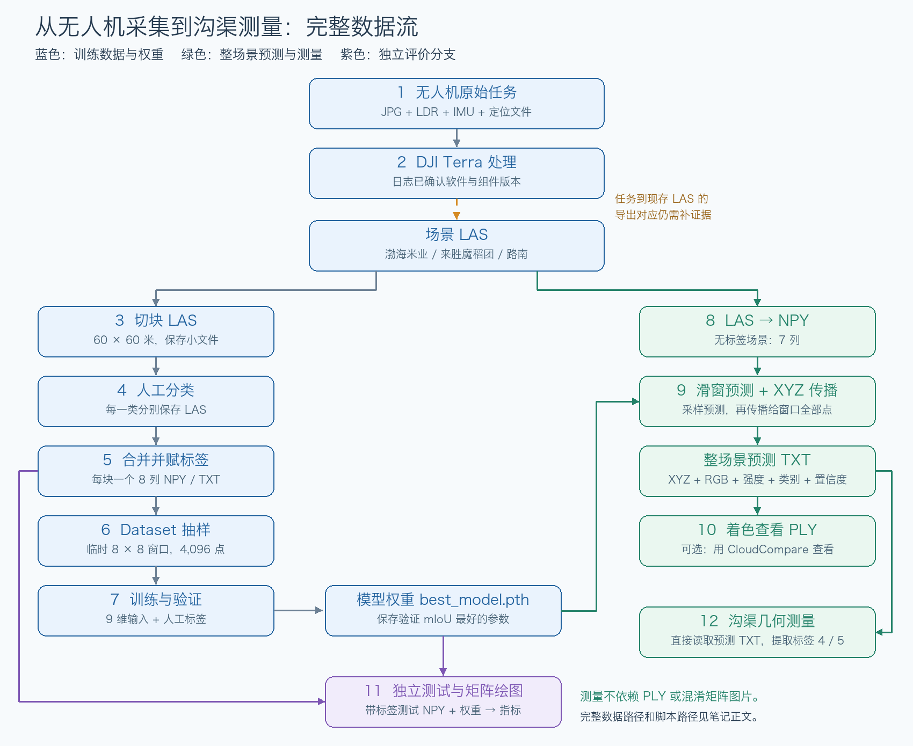
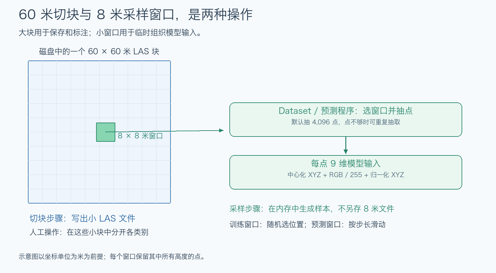
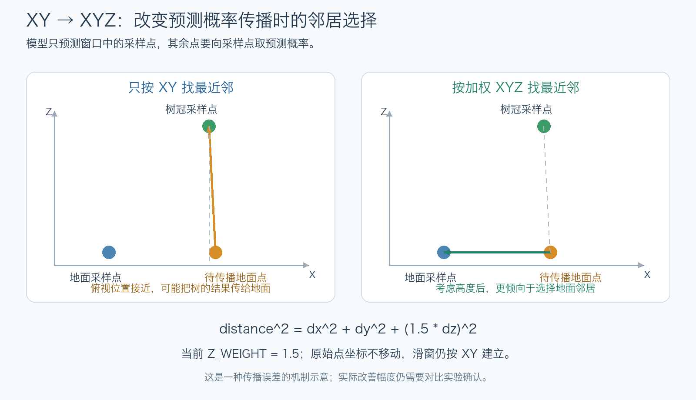

无人机点云到沟渠几何测量：数据流与复现笔记¶
整理及追加核验日期：2026-10-22。
笔记保存位置：
/Users/jazon/Downloads/笔记/jinze_note/docs/研究生/点云深度学习/无人机点云到沟渠几何测量_数据流与复现笔记.md
配图及核验明细目录：
/Users/jazon/Downloads/笔记/jinze_note/docs/研究生/点云深度学习/assets/pointcloud-flow/
本文根据已检查的移动硬盘文件、实际代码、历史日志和手写笔记整理，范围止于沟渠几何测量。主要回答：数据在哪里、脚本在哪里、每一步怎样改变数据、输出什么、保存在哪里。
本文是复现前的流程记录。本次追加读取了DJI处理日志，对18个切块和分类LAS做了全量XYZ对应核验，对合并NPY做了逐块计数与每类最多256行抽样核对，并逐点核对了路南LAS到NPY的坐标转换。没有重新训练、预测、测量或修改移动硬盘源码；数据内容对应不等于已证明当时使用的具体命令、代码版本和权重。
阅读约定¶
- 已确认：已查看相应文件、代码、文件头或日志。
- 待确认：缺少任务对应表、操作日志或逐点校验，不能把猜测当成已经完成的流程。
- 本文列出的 Mac 路径均为完整绝对路径。脚本中的旧 Windows 路径另行标出，不是 Mac 当前路径。
- 文件名里的编号通常只是块编号，不是类别标签。
- “输出规则”表示程序成功运行时会写什么；“已有输出”表示硬盘上确实发现了什么。
如何查阅这份笔记¶
- 先理解整体关系：看下面的总流程图，再按第1—12步阅读。
- 只复现已有权重的预测：先看第8、9、10、12步；不必先重新训练。
- 复核分割指标：看第6、11步，使用带人工标签的测试数据。
- 从头重训：看第3—7步，并先处理009号标注冲突和运行环境。
- 每一步的位置：输入、脚本和输出均列完整路径；图中仅放简短名称，避免字太小。
| 流程导航 | 内容 |
|---|---|
| 第1步 → 第2步 | 原始采集 → DJI Terra点云生产 |
| 第3步 → 第4步 → 第5步 | 切块 → 人工分类LAS → 带标签NPY |
| 第6步 → 第7步 | 组织模型输入 → 训练、验证与权重 |
| 第8步 → 第9步 → 第10步 | 待预测数据 → 整场景预测 → 彩色展示 |
| 第11步 | 带标签测试、指标和混淆矩阵 |
| 第12步 | 沟渠几何测量及已有结果的实际状态 |
| 追加核验记录 | 来源对应、点数差、009号冲突和精度误差 |
两项已证实的复现问题：009号背景与支渠文件包含同样的2,216个点，却会被赋为不同类别；路南LAS转现有NPY后，Y坐标最大绝对差为0.25米。详见第5、8、12步。本文记录事实，不擅自修正原数据。
一、先看完整数据流¶

图中橙色虚线表示：软件和处理步骤有日志证据，但原始任务到现存场景LAS的导出/改名关系仍未完全接上。绿色分支直接从预测TXT进入测量，不要求先生成PLY。
重要区别：彩色PLY不是测试评分的输入；抽样测试也不是整场景预测的后处理。沟渠测量读取带坐标和预测标签的数据，通常不需要先生成PLY或混淆矩阵图片。
二、关键位置¶
| 用途 | 完整路径 |
|---|---|
| 移动硬盘根目录 | /Volumes/高标准农田/ |
| 上游采集与处理资料 | /Volumes/高标准农田/数据/ |
| 雷达处理工程 | /Volumes/高标准农田/数据/雷达点云/ |
| 当前七类数据 | /Volumes/高标准农田/点云/雷达数据集/ |
| 当前七类训练数组 | /Volumes/高标准农田/点云/雷达数据集/merged_output/ |
| 旧六类数据与脚本 | /Volumes/高标准农田/点云/新建文件夹/ |
| PointNet++主工程 | /Volumes/高标准农田/点云/Pointnet_Pointnet2_pytorch-master/ |
第1步：无人机采集原始数据¶
数据在哪里¶
已确认的一份原始任务目录：
/Volumes/高标准农田/数据/七星米业试验田/20260411七星米业试验田平地前点云/DJI_202604111434_001_Zenmuse-L1-mission/
该目录中实际有：
| 格式/文件名特征 | 内容或本次可确认程度 |
|---|---|
.JPG |
无人机照片 |
.LDR |
激光雷达任务原始文件 |
.IMU |
惯性测量相关文件 |
.RTK、.RTB、.RTL、.RTS |
定位任务配套文件，未逐一解析内部内容 |
.CLC、.CLI、.CMI |
任务配套文件，未逐一解析内部内容 |
_PPKRAW.bin、_EVENTLOG.bin、_Timestamp.MRK |
原始定位、事件及时间标记相关文件 |
完整文件路径示例：
/Volumes/高标准农田/数据/七星米业试验田/20260411七星米业试验田平地前点云/DJI_202604111434_001_Zenmuse-L1-mission/DJI_20260411143411_0001_Zenmuse-L1-mission.LDR
/Volumes/高标准农田/数据/七星米业试验田/20260411七星米业试验田平地前点云/DJI_202604111434_001_Zenmuse-L1-mission/DJI_20260411143412_0002_Zenmuse-L1-mission.JPG
通过什么操作、达到什么效果¶
无人机执行采集任务，记录照片、雷达测量和定位等信息。此时尚不是可直接送入分割模型的训练数组。
已确认与待确认¶
- 已确认：并非只有照片，还有L1雷达任务及定位配套数据。
- 待确认：该四月任务是否对应后面的某个训练场景，尚无逐文件对应证据。
- 不能把目录日期、任务日期和训练数据来源直接画等号。
第2步：处理原始任务，生产场景点云¶
处理工程在哪里¶
/Volumes/高标准农田/数据/雷达点云/0326渤海米业沟渠/
/Volumes/高标准农田/数据/雷达点云/0606路南树雷达/
/Volumes/高标准农田/数据/雷达点云/0606路南雷达渠/
/Volumes/高标准农田/数据/雷达点云/20250403魔稻团雷达/
以路南沟渠工程为例，证据文件如下：
| 完整文件路径 | 格式与内容 |
|---|---|
/Volumes/高标准农田/数据/雷达点云/0606路南雷达渠/lidars/lidar_list.json |
JSON，记录L1任务及旧任务路径 |
/Volumes/高标准农田/数据/雷达点云/0606路南雷达渠/processing/intermediate/original_image_list.json |
JSON，照片路径、GPS、姿态和相机信息 |
/Volumes/高标准农田/数据/雷达点云/0606路南雷达渠/rnx_bas.26O |
定位解算相关输入 |
/Volumes/高标准农田/数据/雷达点云/0606路南雷达渠/rnx_rvr.26O |
定位解算相关输入 |
/Volumes/高标准农田/数据/雷达点云/0606路南雷达渠/eph.nav |
导航相关文件 |
/Volumes/高标准农田/数据/雷达点云/0606路南雷达渠/AT/BlocksExchangeUndistortAT_WithoutTiePoints.xml |
影像/空三交换XML |
/Volumes/高标准农田/数据/雷达点云/0606路南雷达渠/processing/intermediate/flight_trajectory_recons.json |
重建轨迹JSON |
/Volumes/高标准农田/数据/雷达点云/0606路南雷达渠/processing/intermediate/lidar_camera_pose.dmv |
雷达/相机姿态中间文件 |
/Volumes/高标准农田/数据/雷达点云/0606路南雷达渠/modify/0606路南雷达渠-pc/project.dmep |
点云处理工程，未按文本还原内部处理步骤 |
JSON记录的旧任务位置是：
C:/Users/Lenovo/Desktop/20260411七星米业试验田平地前点云/DJI_202606061439_015_Zenmuse-L1-mission
父目录名字包含“四月”，但任务名是“六月六日”；采集日期应以任务记录核对。
后续实际使用的场景LAS在哪里¶
| 完整路径 | 已读取的点数与格式 |
|---|---|
/Volumes/高标准农田/点云/雷达数据集/渤海米业.las |
16,042,814点，LAS点格式3 |
/Volumes/高标准农田/点云/雷达数据集/来胜魔稻团.las |
3,272,512点，LAS点格式3 |
/Volumes/高标准农田/点云/雷达数据集/路南.las |
13,648,663点，LAS点格式3 |
操作与效果¶
上游软件利用采集、定位、姿态等信息处理任务，形成可后续切块、标注和预测的场景点云。
本次已补证：生产软件和组件版本¶
四份处理日志都明确出现DJI TERRA, RunSFM entry、DJI lidar postprocess version和Save Point Cloud Results：
| 完整日志路径 | 日志记载版本 | 可定位的行号 |
|---|---|---|
/Volumes/高标准农田/数据/雷达点云/0326渤海米业沟渠/lidars/SDK_Log.txt |
5.0.21.0 | 20：Terra入口；2669：雷达后处理；4046：保存点云 |
/Volumes/高标准农田/数据/雷达点云/20250403魔稻团雷达/lidars/SDK_Log.txt |
5.0.21.0 | 20：Terra入口；1139：雷达后处理；1837：保存点云 |
/Volumes/高标准农田/数据/雷达点云/0606路南雷达渠/lidars/SDK_Log.txt |
5.2.45.0 | 29：Terra入口；4249：雷达后处理；5856：保存点云 |
/Volumes/高标准农田/数据/雷达点云/0606路南树雷达/lidars/SDK_Log.txt |
5.2.45.0 | 29：Terra入口；823：雷达后处理；1865：保存点云 |
已确认使用DJI Terra，日志记录了SFM/影像处理、雷达后处理与点云保存。 这些是日志记录的组件版本，不替代当时安装包和全部界面参数记录。
仍待确认：每个原始任务导出成哪份现存场景LAS、期间是否合并或重命名，以及完整处理参数。现有证据不能把主线全部解释成“纯照片摄影测量生成点云”。文件头中的LASzip字段也不能证明最初的生产软件。
第3步：将场景LAS切成小块LAS¶
脚本、输入与输出¶
| 项目 | 渤海米业相关配置 | 路南相关配置 |
|---|---|---|
| 切块脚本 | /Volumes/高标准农田/点云/新建文件夹/las切割.py |
/Volumes/高标准农田/点云/雷达数据集/las切割.py |
| 对应Mac输入 | /Volumes/高标准农田/点云/雷达数据集/渤海米业.las |
/Volumes/高标准农田/点云/雷达数据集/路南.las |
| 对应Mac输出目录 | /Volumes/高标准农田/点云/雷达数据集/切割结果/ |
/Volumes/高标准农田/点云/雷达数据集/切割结果1/ |
表中是当前代码配置对应到Mac的位置；代码内部仍是旧Windows路径。
具体做了什么¶
- 在XY平面用PCA找点云的主要延伸方向。
- 沿主要方向建立临时UV坐标。
- 按60×60米的格子划分，少于1,000点的格子不保存。
- 将每格的点保存成独立LAS，保留原始点坐标及点记录。
PCA：此处用于自动找出点云长轴方向。UV：顺着长轴和垂直长轴的临时坐标，类似把透明方格纸转到与沟渠平行，仅用于判断点属于哪个格子。
实盘结果与命名疑点¶
/Volumes/高标准农田/点云/雷达数据集/切割结果/001.las
/Volumes/高标准农田/点云/雷达数据集/切割结果/018.las
/Volumes/高标准农田/点云/雷达数据集/切割结果1/路南_tile_u002_v000.las
第一目录已有001—018号LAS；第二目录已有9个路南切块LAS。
本次已补证：18个编号块来自哪里¶
本次直接读取LAS点记录，核对全量XYZ；同组文件的坐标scale/offset相同，因此不是只看名称和点数：
| 现存切块完整路径范围 | 全量XYZ均能在下述场景中找到 |
|---|---|
/Volumes/高标准农田/点云/雷达数据集/切割结果/001.las 至 /Volumes/高标准农田/点云/雷达数据集/切割结果/012.las |
/Volumes/高标准农田/点云/雷达数据集/渤海米业.las |
/Volumes/高标准农田/点云/雷达数据集/切割结果/013.las 至 /Volumes/高标准农田/点云/雷达数据集/切割结果/018.las |
/Volumes/高标准农田/点云/雷达数据集/来胜魔稻团.las |
另外，18个同编号标注目录中的全部分类点XYZ，都能在对应编号的切块中找到。例如001号分类点全部属于001号切块。切块到标注的几何对应已确认，不能再说完全没有证据。
仍未证明的是历史切块命令、脚本当时版本，以及tile_u..._v...改成纯编号的过程。也未证明每个源块都被完整、无重复地标注。
第4步：人工按类别分开，保存分类LAS¶
输入和操作¶
输入为切块LAS。按前述CloudCompare工作方式，将树、道路、主渠、支渠、田块等点人工分开，每一类分别保存为LAS。
实际保存位置¶
以001号标注目录为例，下面这些文件均已发现：
/Volumes/高标准农田/点云/雷达数据集/block_001/背景.las
/Volumes/高标准农田/点云/雷达数据集/block_001/树.las
/Volumes/高标准农田/点云/雷达数据集/block_001/沥青路.las
/Volumes/高标准农田/点云/雷达数据集/block_001/水泥路.las
/Volumes/高标准农田/点云/雷达数据集/block_001/主渠.las
/Volumes/高标准农田/点云/雷达数据集/block_001/支渠.las
/Volumes/高标准农田/点云/雷达数据集/block_001/田块.las
其中“树”的文件保存该块中人工分为树的点，通常不是一棵树一个文件。
达到的效果与确认范围¶
- 类别已经由人工确定，但暂时体现在不同文件和文件名中。
- 分类LAS产物已确认存在；CloudCompare具体操作日志未找到，不能还原当时每次选择、分割和导出的操作。
- 当前七类数据根目录下存在001—027号标注目录，但当前合并成品和加载划分使用001—018，不能把27个目录都算成已投入训练。
第5步：给分类LAS赋数字标签，合并成8列NPY/TXT¶
当前七类转换脚本¶
/Volumes/高标准农田/点云/雷达数据集/las转标签.py
输入在哪里¶
根目录：
/Volumes/高标准农田/点云/雷达数据集/
脚本查找根目录下以block_开头的子目录，再读取各子目录中的.las或.laz，例如第4步列出的七份001号分类文件。也支持没有此类子目录时处理根目录本身。
实际处理¶
- 根据文件名识别类别，不依赖LAS内部已有的classification来决定本脚本的标签。
- 给一个类别文件中的所有点赋相同数字标签。
- 提取XYZ、RGB和强度。RGB超出255时按代码缩放、取整并限制到0—255；缺少颜色或强度时填0。
- 把同一块中的各类别点拼接起来，不把所有块合并成一个大文件。
| 数字标签 | 文件名示例 | 当前类别 |
|---|---|---|
| 0 | 背景.las | 其他背景 |
| 1 | 树.las | 防护林 |
| 2 | 沥青路.las | 沥青路 |
| 3 | 水泥路.las | 水泥路 |
| 4 | 主渠.las | 主渠 |
| 5 | 支渠.las | 支渠 |
| 6 | 田块.las | 田块 |
文件名只是该映射的例子；其完整位置见第4步。
输出在哪里、什么格式¶
001号输出：
/Volumes/高标准农田/点云/雷达数据集/merged_output/block_001.npy
/Volumes/高标准农田/点云/雷达数据集/merged_output/block_001.txt
每点8列，顺序固定：
x y z r g b intensity label
TXT方便查看，NPY方便程序读取。001号NPY已读文件头，形状为829,565×8，类型float64。
全部合并产物所在目录：
/Volumes/高标准农田/点云/雷达数据集/merged_output/
已发现001—018号的NPY和TXT；原分类LAS保留。
本次核对结果与009号块的问题¶
18个目录的分类LAS点数之和都等于对应NPY行数；每类最多256个均匀抽取行的XYZ、RGB、强度、标签，与当前转换规则一致。这是内容核验，不是重新执行转换或恢复历史运行日志。
001号例子：源块830,944点，分类LAS与合并NPY都是829,565点，少1,379点；缺失原因未留有操作记录，不应擅自解释为噪声清理。
009号存在已确认的标签冲突：
/Volumes/高标准农田/点云/雷达数据集/block_009/背景.las
/Volumes/高标准农田/点云/雷达数据集/block_009/支渠.las
/Volumes/高标准农田/点云/雷达数据集/merged_output/block_009.npy
前两份LAS均有2,216点，XYZ顺序、RGB与强度完全相同；但文件名使转换脚本分别赋标签0和5，且对应内容已经进入合并NPY。009号NPY共有886,535行，但只有884,319个唯一XYZ。
因此，从头重训前应回到标注来源核对这2,216点究竟属于哪类。本文不自动删文件、不猜正确类别；原样复核历史分数和修正数据后重训也应分开记录。
旧六类脚本不能混用¶
手写笔记提到的旧脚本：
/Volumes/高标准农田/点云/新建文件夹/merge_labeled_las.py
其输入根目录和输出目录分别为：
/Volumes/高标准农田/点云/新建文件夹/
/Volumes/高标准农田/点云/新建文件夹/merged_output/
它使用旧六类编号：田块0、沥青1、水泥2、梯形渠3、U形渠4、树5。当前七类编号不同，当前中文标注应对应本步的七类转换脚本。
另外，转换TXT带首行列名，而当前Dataset的TXT分支未跳过该表头；复现优先使用已有NPY，不能假定TXT回退读取原样可用。
第6步：读取带标签NPY，临时准备训练/验证/测试样本¶
脚本位置¶
/Volumes/高标准农田/点云/Pointnet_Pointnet2_pytorch-master/data_utils/farmland_dataset.py
该脚本由训练和测试程序导入，通常不用单独运行。
输入与划分¶
读取目录：
/Volumes/高标准农田/点云/雷达数据集/merged_output/
文件完整路径示例：
/Volumes/高标准农田/点云/雷达数据集/merged_output/block_001.npy
| 用途 | 当前代码固定编号 |
|---|---|
| 训练 | 001—010、013、014、017、018，共14块 |
| 验证 | 011、012，共2块 |
| 测试 | 015、016，共2块 |
这是按编号选择读取，不会移动文件或重新建立三个数据目录。
具体处理与效果¶
- 读取8列数据并检查标签是否在0—6。
- 在其中随机选位置，取默认边长8.0的XY窗口。坐标单位为米时，就是8×8米。
- 抽4,096点，点数不足时允许重复抽取。
- 局部窗口多次无法满足点数要求时，退回整块抽样。
- 构造每点9维输入，人工标签单独返回：
中心化XYZ（3维） + RGB/255（3维） + 场景归一化XYZ（3维）
强度intensity保存在原数据中，但当前不作为模型输入。
“中心化”是减去局部参考位置；XY减窗口中心，Z减采样点的平均高度。“归一化XYZ”按当前数据块各轴最小值与范围计算。
输出在哪里¶
不生成新文件。样本和标签在内存中交给训练/测试程序。原NPY保持不变。
60米切块与8米窗口是两回事：前者写出小LAS，便于标注；后者是模型读数据时临时抽取的局部区域。

第7步：正式训练并验证，保存权重¶
训练脚本和模型定义¶
| 用途 | 完整文件路径 |
|---|---|
| 训练入口 | /Volumes/高标准农田/点云/Pointnet_Pointnet2_pytorch-master/train_semseg.py |
| 数据读取与抽样 | /Volumes/高标准农田/点云/Pointnet_Pointnet2_pytorch-master/data_utils/farmland_dataset.py |
| 默认PointNet++模型 | /Volumes/高标准农田/点云/Pointnet_Pointnet2_pytorch-master/models/pointnet2_sem_seg.py |
输入及操作¶
数据根目录为：
/Volumes/高标准农田/点云/雷达数据集/merged_output/
训练脚本调用Dataset读取训练块和验证块。每点9维输入交给模型预测，与人工标签比较得到损失，再调整模型参数。验证阶段不更新参数，用验证mIoU判断最佳权重。
当前默认参数：150轮、每批8份样本、每份4,096点、学习率0.001、7类、模型名pointnet2_sem_seg、实验名farmland_exp。
随机抽样使“一轮”不等于每个原始点恰好看过一次。新实验还需注意：当前脚本会尝试从同实验目录的最佳权重恢复，因此不能默认每次都是从头训练。
输出位置¶
按默认实验名、从工程根目录运行时：
/Volumes/高标准农田/点云/Pointnet_Pointnet2_pytorch-master/log/sem_seg/farmland_exp/checkpoints/best_model.pth
/Volumes/高标准农田/点云/Pointnet_Pointnet2_pytorch-master/log/sem_seg/farmland_exp/checkpoints/model.pth
/Volumes/高标准农田/点云/Pointnet_Pointnet2_pytorch-master/log/sem_seg/farmland_exp/logs/pointnet2_sem_seg.txt
- 最佳权重：验证mIoU表现最好的检查点，后续预测/测试主要加载它。
- 普通检查点：训练过程中定期保存。
- 日志：参数、训练损失、准确率和验证指标等。
以上文件均已发现。已有复核日志记录当前最佳权重为7类、9通道，epoch=82，验证mIoU约88.0853%。这是历史记录，本次未执行权重加载核验。
运行条件：训练脚本多处直接调用CUDA；Mac上不是仅改路径即可原样运行。本文不提供“已验证可在Mac直接训练”的承诺。
第8步：将待预测的场景LAS转为7列NPY¶
转换脚本¶
/Volumes/高标准农田/点云/Pointnet_Pointnet2_pytorch-master/las_to_npy.py
输入与输出¶
输入：/Volumes/高标准农田/点云/雷达数据集/路南.las
输出：/Volumes/高标准农田/点云/雷达数据集/路南.npy
具体处理与效果¶
提取XYZ、RGB、强度，RGB超过255时按脚本除以257，缺少颜色或强度时填0。输出每点7列：
x y z r g b intensity
待预测场景可以没有人工标签。它与第5步用于训练的8列数据不同。
本次已补证：路南LAS与NPY逐点对应及误差¶
已有路南NPY为13,648,663×7，float32。本次逐点核验确认：
- 全部行XYZ等于原LAS坐标转float32的值，顺序一致。
- 全部行强度与LAS一致，RGB与除以257的规则一致。
- 原LAS坐标量化步长为0.0001米，但转换到现有NPY后，最大绝对坐标差为：X约0.0312米、Y为0.25米、Z约0.00000381米。
因此，路南LAS到现有NPY的行对应和float32坐标损失已经确认，不再只是风险推测。 这不代表九月另一个测量输入的精度损失源头也已经查明。
第9步：加载权重，对整场景预测类别¶
预测脚本¶
/Volumes/高标准农田/点云/Pointnet_Pointnet2_pytorch-master/predict_farmland.py
输入文件¶
/Volumes/高标准农田/点云/雷达数据集/路南.npy
/Volumes/高标准农田/点云/Pointnet_Pointnet2_pytorch-master/log/sem_seg/farmland_exp/checkpoints/best_model.pth
模型结构默认导入：
/Volumes/高标准农田/点云/Pointnet_Pointnet2_pytorch-master/models/pointnet2_sem_seg.py
操作与效果¶
- 在XY平面生成边长8.0、步长4.0的窗口。
- 每窗抽4,096点，生成与训练一致形式的9维特征；全局归一化的参考范围来自当前预测场景。
- 模型输出采样点的各类概率。
- 用加权XYZ最近邻，把采样点概率传播给窗口全部点。
- 对重叠窗口的概率取平均，选择最大概率类别，并保存该概率为置信度。
当前参数：
| 参数 | 当前值 | 意义 |
|---|---|---|
BLOCK_SIZE |
8.0 | 预测窗口边长，坐标为米时即8米 |
STRIDE |
4.0 | 窗口移动步长 |
NUM_POINT |
4096 | 每窗送入模型的采样点数 |
MIN_POINTS_IN_WINDOW |
64 | 建立常规窗口的最少点数条件 |
BATCH_WINDOW |
8 | 每批处理的窗口数 |
Z_WEIGHT |
1.5 | 最近邻传播中高度差的权重 |
“明显改善阴影”和XY→XYZ¶
代码注释明确针对“树影被分成树”。只使用XY传播时，地面点可能继承平面位置接近、但高度不同的树冠采样点的预测概率。
当前传播距离为：
距离平方 = Δx² + Δy² + (Z_WEIGHT × Δz)²
因此当前1.5使高度差平方项乘2.25。函数签名默认2.0，但主流程显式传入全局1.5，实际使用1.5。
这里修改的是预测后的概率传播距离，不是移动原始点，也不是照片去阴影；模型本身原来就使用XYZ，滑窗仍然按XY建立。
手写笔记记录Z_WEIGHT测试1.5、2.0、3.0中1.5最优，BLOCK_SIZE测试10、8、6中8最优。当前代码值与此一致，但缺少对应对比记录，不能独立确认最优性或改善幅度。

输出位置与格式¶
/Volumes/高标准农田/点云/雷达数据集/路南.txt
无人工标签时，9列：
x y z r g b intensity pred_label confidence
有人工标签时，10列：
x y z r g b intensity gt_label pred_label confidence
已有路南TXT实读表头为无GT的9列。置信度是预测分数，不等于真实正确率。
本次核对：路南TXT共13,648,663行数据，与NPY行数相同；开头512行和末尾512行的XYZ与NPY相符（容差0.000001米）。中间行尚未逐点比较，因此不能把首尾抽样写成全文件预测表核验。
仍待确认：缺少该份已有TXT的当次预测日志，具体使用的权重、代码版本、随机采样和传播参数不能从结果文件倒推出。
第10步：将预测类别着色，输出可查看的PLY¶
脚本、输入与输出¶
脚本：/Volumes/高标准农田/点云/Pointnet_Pointnet2_pytorch-master/visualize_pred_to_ply.py
输入：/Volumes/高标准农田/点云/雷达数据集/路南.txt
输出：/Volumes/高标准农田/点云/雷达数据集/路南.ply
操作与效果¶
读取预测表的XYZ和预测类别，按类别赋RGB，写出ASCII PLY。可用CloudCompare旋转、放大，检查是否有明显误分。
| 当前标签/类别 | 实际显示颜色 |
|---|---|
| 0 背景 | 黄色 |
| 1 防护林 | 橙色 |
| 2 沥青路 | 灰色 |
| 3 水泥路 | 蓝色 |
| 4 主渠 | 紫色 |
| 5 支渠 | 绿色 |
| 6 田块 | 红色 |
部分颜色注释沿用旧六类名称，应以当前数字标签解释。
输出PLY保存XYZ和显示RGB，不单独保存预测标签、GT和置信度。此步骤不重新预测、不移动点；类别和置信度仍应从原预测表取得。
本次核对PLY文件头和数据行数均为13,648,663；首尾各512行XYZ与NPY相符，RGB与预测TXT类别按当前颜色表生成的值相符。这确认了行数与首尾抽样对应，尚非整份PLY逐行核验。
第11步：定量评价与混淆矩阵绘图（独立评价分支）¶
11.1 测试模型¶
测试脚本：
/Volumes/高标准农田/点云/Pointnet_Pointnet2_pytorch-master/test_semseg.py
选择split=test时使用：
/Volumes/高标准农田/点云/雷达数据集/merged_output/block_015.npy
/Volumes/高标准农田/点云/雷达数据集/merged_output/block_016.npy
/Volumes/高标准农田/点云/Pointnet_Pointnet2_pytorch-master/log/sem_seg/farmland_exp/checkpoints/best_model.pth
调用的数据准备脚本：
/Volumes/高标准农田/点云/Pointnet_Pointnet2_pytorch-master/data_utils/farmland_dataset.py
操作：抽样生成9维输入，加载权重预测，将预测类别与人工标签比较，计算OA、mIoU、mAcc、逐类指标及混淆矩阵。
范围：是抽样窗口评价，不是整场景每个原始点的评价；未使用第9步的全点XYZ传播，因此不能用该测试直接证明传播修改改善了多少阴影。
11.2 已有输出位置¶
/Volumes/高标准农田/点云/Pointnet_Pointnet2_pytorch-master/artifacts/test7_seed0_20260915/eval_test.txt
/Volumes/高标准农田/点云/Pointnet_Pointnet2_pytorch-master/artifacts/test7_seed0_20260915/test_pred.npy
/Volumes/高标准农田/点云/Pointnet_Pointnet2_pytorch-master/artifacts/test7_seed0_20260915/test_label.npy
/Volumes/高标准农田/点云/Pointnet_Pointnet2_pytorch-master/artifacts/test7_seed0_20260915/test_confusion_matrix.npy
/Volumes/高标准农田/点云/Pointnet_Pointnet2_pytorch-master/artifacts/test7_seed0_20260915/test_confusion_matrix_norm.npy
分别是日志、抽样点预测标签、对应真实标签、数量矩阵、按真实类别逐行归一化的比例矩阵。预测标签数组不是带XYZ的完整场景点云。
已有记录：seed=0，batch_size=2，216个采样窗口，每窗4,096点；mIoU 78.1840%，OA 92.2937%，mAcc 86.2990%；主渠IoU约70.5%，支渠约50.6%。这不是本次重跑结果，也不等于验证集最佳mIoU。
当前测试入口要求指定--log_dir和新的--output_dir；默认split为val，默认data_root仍指向旧六类Windows目录。复现七类测试必须显式核对数据根目录和split，不能只运行默认值。
11.3 绘制混淆矩阵¶
绘图脚本：
/Volumes/高标准农田/点云/Pointnet_Pointnet2_pytorch-master/plot_confusion_matrix.py
作用：读取矩阵NPY并生成PNG；行是真实类别，列是预测类别，对角线是预测正确，其他格子是错分。
现有脚本仍采用旧六类，默认读取和输出：
/Volumes/高标准农田/点云/Pointnet_Pointnet2_pytorch-master/log/sem_seg/farmland_exp/visual_test/val_confusion_matrix.npy
/Volumes/高标准农田/点云/Pointnet_Pointnet2_pytorch-master/log/sem_seg/farmland_exp/visual_test/val_confusion_matrix_norm.npy
/Volumes/高标准农田/点云/Pointnet_Pointnet2_pytorch-master/log/sem_seg/farmland_exp/visual_test/val_confusion_matrix.png
/Volumes/高标准农田/点云/Pointnet_Pointnet2_pytorch-master/log/sem_seg/farmland_exp/visual_test/val_confusion_matrix_norm.png
这批旧矩阵与图片已存在。绘制当前七类测试时，需要修改输入目录、文件名、七类名称顺序及输出位置；尚未确认已有对应七类PNG。不能将六类旧图当成七类当前结果。
第12步：提取沟渠实例，进行几何测量¶
脚本与输入¶
/Volumes/高标准农田/点云/Pointnet_Pointnet2_pytorch-master/measure_ditch_geometry.py
脚本支持带预测类别的TXT、CSV和NPY。可使用的输入示例：
/Volumes/高标准农田/点云/雷达数据集/路南.txt
这里只说明该预测表的列格式符合读取要求，不表示已有测量记录用的就是路南数据。
当前七类应提取标签4主渠和标签5支渠，不应将标签3水泥路作为沟渠。
具体操作与效果¶
- 读取XYZ、预测标签和可用的置信度。
- 提取主渠、支渠点；可选按置信度过滤。
- 在XY平面按邻近关系聚类，尝试分成不同沟渠实例。
- 找实例走向，沿走向切取横断面。
- 用有效断面估计中心线长度、宽度、上口宽、底宽、高度差和边坡统计。
当前默认：聚类邻域0.30、最少邻居20、实例至少200点、断面间隔0.30、厚度0.20、断面至少30点；坐标为米时长度参数才按米解释。
“高度”是代码按边缘点和低位点估计的高差，是否代表真实渠深要看边缘与渠底是否被完整采集。横断面尺寸采用分位数等估计，不是任意输入都能得到可靠测量。当前没有直接输出容积计算结果。
成功运行时输出在哪里¶
默认输出目录、从工程根目录运行时：
/Volumes/高标准农田/点云/Pointnet_Pointnet2_pytorch-master/ditch_measure_output/config.json
/Volumes/高标准农田/点云/Pointnet_Pointnet2_pytorch-master/ditch_measure_output/ditch_measurements.csv
/Volumes/高标准农田/点云/Pointnet_Pointnet2_pytorch-master/ditch_measure_output/instances/
/Volumes/高标准农田/点云/Pointnet_Pointnet2_pytorch-master/ditch_measure_output/sections/
| 输出 | 内容 |
|---|---|
| 配置JSON | 输入路径和本次参数 |
| 汇总CSV | 每条可测实例的点数、有效断面数和尺寸统计 |
| 实例目录下TXT | 对应沟渠实例的点和标签等 |
| 断面目录下CSV | 各有效断面的详细结果 |
以下是按当前命名规则推算的成功输出示例，不是宣称已有本次有效结果：
/Volumes/高标准农田/点云/Pointnet_Pointnet2_pytorch-master/ditch_measure_output/instances/main_canal_001.txt
/Volumes/高标准农田/点云/Pointnet_Pointnet2_pytorch-master/ditch_measure_output/sections/main_canal_001_sections.csv
当前代码拒绝写入已有非空输出目录，因此新实验应指定新目录，不能直接覆盖旧目录。
两批已有记录必须区分¶
旧输出：
/Volumes/高标准农田/点云/Pointnet_Pointnet2_pytorch-master/ditch_measure_output/config.json
/Volumes/高标准农田/点云/Pointnet_Pointnet2_pytorch-master/ditch_measure_output/ditch_measurements.csv
文件确实存在，但配置使用沟渠编号3、4，汇总包含cement_road，目录中还混有不同类别命名。不能当作当前七类有效沟渠测量成果。
九月按当前七类重做的尝试：
/Volumes/高标准农田/点云/Pointnet_Pointnet2_pytorch-master/artifacts/ditch7_20260915/config.json
/Volumes/高标准农田/点云/Pointnet_Pointnet2_pytorch-master/artifacts/RECHECK_20260915.md
配置中的当次输入是旧Windows路径：
D:\Desktop\jieguo\farmland_predict_result.txt
当前尚未确认其对应Mac文件位置。追加在点云目录中限定检索该文件名，跳过环境、公共数据和缓存等目录，仍未找到同名文件；这不代表整盘不存在。不能自行替换为路南预测文件。记录称输入为3,272,512行、9列；点数相同本身不足以证明来自哪个场景。
该次按标签4、5测量：主渠249,581点，分成765个片段但无有效断面；支渠45,026点，没有合格点簇。未生成有效测量表。
测量前的坐标精度核验¶
已有记录观察到Y坐标间隔0.5米或1米、X为0.03125米的倍数，与大坐标存float32导致的量化现象相符，但该次输入的精度损失起点尚未证实。
需要核对的相关代码：
/Volumes/高标准农田/点云/Pointnet_Pointnet2_pytorch-master/las_to_npy.py
/Volumes/高标准农田/点云/Pointnet_Pointnet2_pytorch-master/data_utils/farmland_dataset.py
/Volumes/高标准农田/点云/Pointnet_Pointnet2_pytorch-master/predict_farmland.py
三处均存在float32转换，Dataset还在局部中心化之前就转换整块数据。因此仅把保存NPY的类型改为float64，不足以解决完整流程中的精度问题。
路南可以核对的源数据和转换数据为：
/Volumes/高标准农田/点云/雷达数据集/路南.las
/Volumes/高标准农田/点云/雷达数据集/路南.npy
/Volumes/高标准农田/点云/雷达数据集/路南.txt
应保留原始高精度坐标，并核验标签与原始点的行对应。已损失的坐标不能靠事后改数据类型恢复；XYZ传播只是改变邻居选择，并不等于损失坐标精度或平移原始点。
三、复现时需要调整的入口¶
以下只列修改位置与用途，不表示已完成环境适配，也不是现在需要执行的命令。
| 需要调整什么 | 所在脚本完整路径 | 入口/注意点 |
|---|---|---|
| 大LAS输入和切块输出目录 | /Volumes/高标准农田/点云/雷达数据集/las切割.py |
main中的输入、输出、切块大小 |
| 七类标注根目录 | /Volumes/高标准农田/点云/雷达数据集/las转标签.py |
main中的root_dir，输出为其下merged_output |
| 数据划分和训练采样 | /Volumes/高标准农田/点云/Pointnet_Pointnet2_pytorch-master/data_utils/farmland_dataset.py |
固定编号、窗口和特征构造；改变划分后不再是同一测试设置 |
| 训练数据和实验名称 | /Volumes/高标准农田/点云/Pointnet_Pointnet2_pytorch-master/train_semseg.py |
--data_root、--log_dir，还需处理CUDA兼容 |
| 待预测LAS转换 | /Volumes/高标准农田/点云/Pointnet_Pointnet2_pytorch-master/las_to_npy.py |
INPUT_LAS、OUTPUT_NPY及坐标精度 |
| 整场景预测 | /Volumes/高标准农田/点云/Pointnet_Pointnet2_pytorch-master/predict_farmland.py |
INPUT_NPY、OUTPUT_TXT、CKPT_PATH和窗口/传播参数 |
| 彩色展示 | /Volumes/高标准农田/点云/Pointnet_Pointnet2_pytorch-master/visualize_pred_to_ply.py |
INPUT_TXT、OUTPUT_PLY和颜色对应 |
| 七类测试 | /Volumes/高标准农田/点云/Pointnet_Pointnet2_pytorch-master/test_semseg.py |
显式指定数据根目录、split、实验名、新输出目录、seed |
| 七类矩阵绘图 | /Volumes/高标准农田/点云/Pointnet_Pointnet2_pytorch-master/plot_confusion_matrix.py |
从旧六类切换到正确七类矩阵与名称 |
| 沟渠尺寸测量 | /Volumes/高标准农田/点云/Pointnet_Pointnet2_pytorch-master/measure_ditch_geometry.py |
--input、新的--out_dir、类别4/5、聚类与断面参数 |
相对输出路径依赖启动目录；本文给出的工程内输出位置以工程根目录启动为前提。Windows反斜杠相对路径也要调整，不能只替换盘符。
四、当前已确认与待确认¶
| 环节 | 当前状态 |
|---|---|
| 原始采集文件 | 已找到照片、雷达及定位配套文件 |
| 点云生产软件与组件版本 | 日志已确认DJI Terra 5.0.21.0/5.2.45.0，原始任务到现存LAS仍缺完整导出对应 |
| 切块来源与标注对应 | 001—012的XYZ属于渤海，013—018属于来胜；18组分类LAS全量XYZ均属于同编号切块，历史改名操作未确认 |
| 人工分类LAS | 已找到；具体CloudCompare操作日志缺失 |
| 七类合并数据 | 已核对18块点数及每类抽样；009号背景/支渠存在2,216点标签冲突 |
| Dataset样本构造 | 代码已确认，内存中输出9维特征，强度不输入模型 |
| 权重、训练日志 | 已找到；同目录混有历史实验，需按日期和类别区分 |
| 路南数据及预测产物 | LAS→NPY逐点对应且Y最大误差0.25米已确认；TXT/PLY完整行数和首尾抽样匹配，历史权重/参数待确认 |
| 七类抽样测试 | 已有历史日志及矩阵，范围为抽样窗口 |
| 当前七类混淆矩阵PNG | 未确认已有，绘图脚本仍需适配 |
| 沟渠几何测量 | 代码与尝试记录存在，尚不能认定已取得可靠最终尺寸 |
本文到沟渠几何测量结束，不扩展到论文写作、其他模型对比或项目验收。
五、追加核验记录：来源、点数与证据文件¶
核验方法的范围¶
- 上游软件：读取四份SDK日志中的版本及保存点云记录。
- 场景→切块：18个块的全部XYZ均在对应大场景中找到；这里确认几何子集关系，不声称恢复历史命令。
- 切块→分类：18个标注目录的全部分类点XYZ均在同编号切块找到；同时统计重复坐标。
- 分类→NPY：核对每块总点数与逐类标签数量，再将每类最多256行与当前转换规则比较；没有将抽样表述为NPY全部数值核验。
- 路南LAS→NPY：全量逐点比较XYZ、强度、RGB规则，并统计坐标误差。
- 路南TXT/PLY：完整统计数据行数，首尾各512行核对坐标及颜色，不宣称已检查全部中间行。
18块点数表¶
“少于源块点数”不自动等于清理噪声；缺失点的实际原因需要标注过程记录。009号还包含重复点，应结合唯一XYZ数解释。
| 块编号 | 源场景 | 切块点数 | 分类/NPY行数 | 唯一分类XYZ数 | 分类行数少于切块 |
|---|---|---|---|---|---|
| 001 | 渤海米业 | 830,944 | 829,565 | 829,565 | 1,379 |
| 002 | 渤海米业 | 1,031,017 | 1,030,286 | 1,030,286 | 731 |
| 003 | 渤海米业 | 1,107,277 | 1,106,913 | 1,106,913 | 364 |
| 004 | 渤海米业 | 431,280 | 431,280 | 431,280 | 0 |
| 005 | 渤海米业 | 1,131,658 | 1,130,859 | 1,130,859 | 799 |
| 006 | 渤海米业 | 438,349 | 438,349 | 438,349 | 0 |
| 007 | 渤海米业 | 1,052,166 | 1,048,539 | 1,048,539 | 3,627 |
| 008 | 渤海米业 | 468,511 | 468,511 | 468,511 | 0 |
| 009 | 渤海米业 | 1,059,121 | 886,535 | 884,319 | 172,586 |
| 010 | 渤海米业 | 449,452 | 449,452 | 449,452 | 0 |
| 011 | 渤海米业 | 1,143,369 | 1,142,113 | 1,142,113 | 1,256 |
| 012 | 渤海米业 | 433,769 | 433,769 | 433,769 | 0 |
| 013 | 来胜魔稻团 | 412,815 | 412,651 | 412,651 | 164 |
| 014 | 来胜魔稻团 | 407,215 | 406,991 | 406,991 | 224 |
| 015 | 来胜魔稻团 | 418,176 | 417,756 | 417,756 | 420 |
| 016 | 来胜魔稻团 | 471,343 | 470,773 | 470,773 | 570 |
| 017 | 来胜魔稻团 | 501,339 | 500,957 | 500,957 | 382 |
| 018 | 来胜魔稻团 | 425,742 | 425,648 | 425,648 | 94 |
随笔记保存的核验明细¶
证据表和图示随笔记放在同一相对资源目录，移动笔记时应一并移动。原始数据和脚本仍以正文列出的完整移动硬盘路径为准。
仍无法从现有证据确定的事项¶
| 事项 | 已查到什么 | 还缺什么 |
|---|---|---|
| 某次原始任务是否直接生成现存场景LAS | DJI任务路径、Terra版本、点云保存日志 | 原始任务到具体导出LAS的对应或可解析工程记录 |
| 当时具体CloudCompare点击操作、切块改名过程 | 分类LAS、18块全量XYZ对应 | 当次操作日志；缺失点与009号重复点的正确处理记录 |
| 当前路南预测使用的权重和参数 | 结果行数、首尾坐标/颜色匹配，代码当前参数 | 该次预测运行日志、模型文件身份与参数快照 |
| 手写“1.5和8最优”的改善幅度 | 代码当前设置确实是1.5和8 | 对应对比实验输出、指标和图像 |
| 九月测量输入在Mac上的位置 | 配置中的旧Windows路径与历史测量记录 | 对应预测文件或能核验内容一致的副本 |
以上保留待确认，不用通用流程或同名猜测填补。
配图和核验文件的完整保存位置¶
/Users/jazon/Downloads/笔记/jinze_note/docs/研究生/点云深度学习/assets/pointcloud-flow/01-overview.png
/Users/jazon/Downloads/笔记/jinze_note/docs/研究生/点云深度学习/assets/pointcloud-flow/01-overview.svg
/Users/jazon/Downloads/笔记/jinze_note/docs/研究生/点云深度学习/assets/pointcloud-flow/02-block-and-window.png
/Users/jazon/Downloads/笔记/jinze_note/docs/研究生/点云深度学习/assets/pointcloud-flow/02-block-and-window.svg
/Users/jazon/Downloads/笔记/jinze_note/docs/研究生/点云深度学习/assets/pointcloud-flow/03-xyz-propagation.png
/Users/jazon/Downloads/笔记/jinze_note/docs/研究生/点云深度学习/assets/pointcloud-flow/03-xyz-propagation.svg
/Users/jazon/Downloads/笔记/jinze_note/docs/研究生/点云深度学习/assets/pointcloud-flow/block_verification.csv
/Users/jazon/Downloads/笔记/jinze_note/docs/研究生/点云深度学习/assets/pointcloud-flow/block_verification.json
/Users/jazon/Downloads/笔记/jinze_note/docs/研究生/点云深度学习/assets/pointcloud-flow/prediction_verification.json
/Users/jazon/Downloads/笔记/jinze_note/docs/研究生/点云深度学习/assets/pointcloud-flow/source_verification.json